glTF™ (GL Transmission Format) được dùng để truyền tải và nạp các mô hình 3D trong các ứng dụng web và native. glTF giúp giảm kích thước mô hình 3D cũng như lượng xử lý lúc runtime cần thiết để giải nén và render các mô hình đó. Định dạng này được dùng phổ biến trên web và được nhiều engine 3D hỗ trợ như Unity3D, Unreal Engine 4 và Godot.
Bộ import/export này hỗ trợ các tính năng glTF 2.0 sau đây:
Cấu trúc nội bộ của glTF mô phỏng các bộ đệm bộ nhớ thường được chip đồ họa sử dụng khi render theo thời gian thực, nhờ đó tài sản có thể được gửi đến các client desktop, web hoặc di động và hiển thị tức thì với mức xử lý tối thiểu. Hậu quả là, quad và n-gon sẽ tự động được chuyển thành tam giác khi xuất sang glTF. UV không liên tục và cạnh flat-shading có thể làm số vertex trong glTF tăng khá nhiều so với Blender, do các vertex như vậy bị tách riêng khi xuất. Tương tự, curve và các dữ liệu không phải mesh sẽ không được giữ lại và phải được chuyển thành mesh trước khi xuất.
Hệ thống material cốt lõi trong glTF hỗ trợ quy trình PBR metal/rough với các kênh thông tin sau:
Base Color
Metallic
Roughness
Baked Ambient Occlusion
Normal Map (tangent space, +Y up)
Emissive
Một số thuộc tính material bổ sung hoặc các loại material khác có thể được biểu diễn bằng glTF extension. Danh sách đầy đủ có thể được tìm thấy trong phần Extensions của tài liệu này.
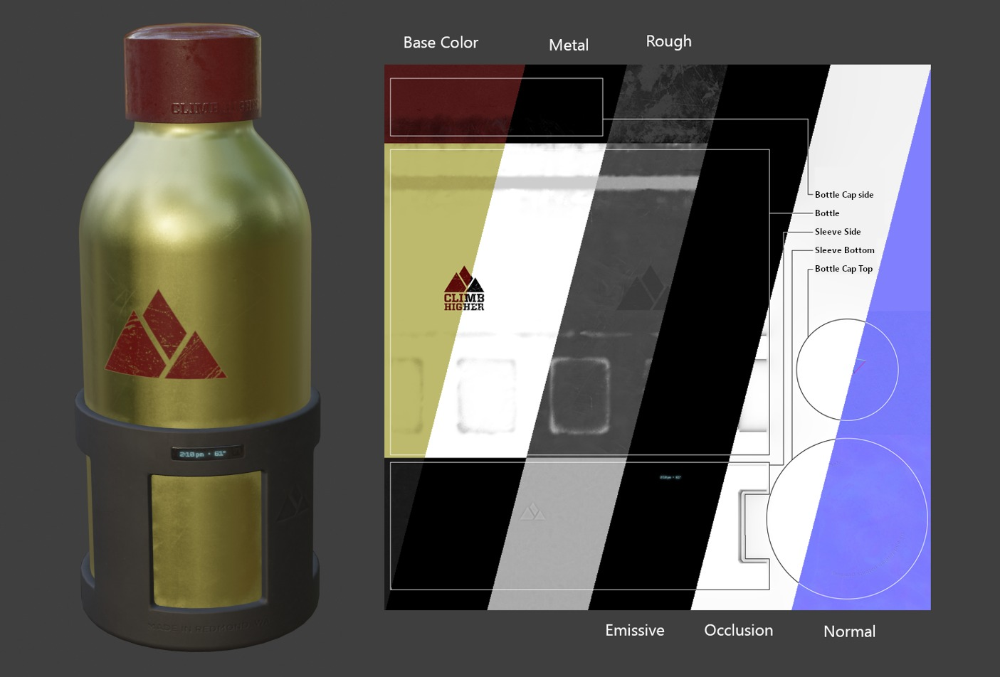
Ví dụ về các image map đa dạng có sẵn trong định dạng cốt lõi glTF 2.0. Đây là mô hình mẫu chai nước được hiển thị cùng các lát cắt của các image map khác nhau của nó.¶
Hệ thống material của glTF khác với hệ thống material sẵn có của Blender. Khi một file glTF được import, add-on sẽ dựng một bộ node Blender để tái tạo từng material glTF càng chính xác càng tốt.
Bộ import hỗ trợ Metal/Rough PBR (glTF cốt lõi), Spec/Gloss PBR (KHR_materials_pbrSpecularGlossiness) và một số material extension. Danh sách đầy đủ có thể được tìm thấy trong phần Extensions của tài liệu này.
Mẹo
Việc khảo sát kết quả của quá trình import material là cách tốt để xem các ví dụ về những loại material node và cài đặt có thể được xuất sang glTF.
Bộ export hỗ trợ material Metal/Rough PBR (glTF cốt lõi) và Shadeless (KHR_materials_unlit). Nó sẽ dựng một material glTF dựa trên các node mà nó nhận diện được trong material Blender. Quá trình xuất material xử lý các cài đặt được mô tả bên dưới.
Ghi chú
Khi material sử dụng image texture, glTF yêu cầu các ảnh phải ở định dạng PNG hoặc JPEG. Add-on sẽ tự động chuyển đổi ảnh từ các định dạng khác, làm tăng thời gian xuất.
Base color của glTF được xác định bằng cách tìm input Base Color trên node Principled BSDF. Nếu input này không được kết nối, màu mặc định của input (ô màu bên cạnh socket chưa kết nối) sẽ được dùng làm Base Color cho material glTF.
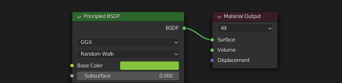
Một màu cơ bản đồng nhất có thể được chỉ định trực tiếp trên node.¶
Nếu một node Image Texture được tìm thấy kết nối với input Base Color, ảnh đó sẽ được dùng làm base color của glTF.
Nếu không có texture nào được kết nối, base color có thể được chỉ định:
Từ input Base Color của node Principled BSDF, đây là mặc định.
Từ một node RGB được kết nối với input Base Color.
Từ một node Ambient Occlusion được kết nối với input Base Color. (Socket AO không được dùng trong glTF, nhưng output màu có thể được dùng làm base color.)
Các giá trị này được đọc từ node Principled BSDF. Nếu cả hai input này đều không được kết nối, node sẽ hiển thị các thanh trượt để điều khiển giá trị tương ứng trong khoảng từ 0.0 đến 1.0, và các giá trị này sẽ được sao chép vào glTF.
Khi sử dụng ảnh, glTF yêu cầu giá trị metallic được mã hóa trong kênh xanh dương (B) và roughness được mã hóa trong kênh xanh lá (G) của cùng một ảnh. Nếu các ảnh được kết nối vào node Blender theo cách không tuân thủ quy ước này, add-on có thể cố điều chỉnh ảnh về đúng dạng trong quá trình xuất (làm tăng thời gian xuất).
Trong node tree của Blender, bạn nên dùng node Separate RGB để tách các kênh từ một node Image Texture, rồi kết nối kênh xanh lá (G) với Roughness và kênh xanh dương (B) với Metallic. Bộ export glTF sẽ nhận ra cách sắp xếp này là phù hợp với chuẩn glTF, nhờ đó có thể đơn giản sao chép image texture vào file glTF khi xuất.
Node Image Texture dùng cho việc này nên có Color Space được đặt thành Non-Color.
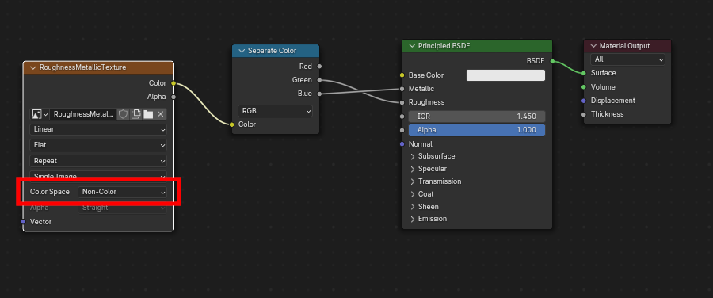
Một ảnh metallic/roughness được kết nối theo cách phù hợp với chuẩn glTF, cho phép nó được dùng nguyên văn trong file glTF đã xuất.¶
glTF có khả năng lưu trữ ambient occlusion map đã bake. Hiện tại không có cách sắp xếp node nào khiến Blender sử dụng map này đúng hệt như dự định trong glTF. Tuy nhiên, nếu bộ export tìm thấy một node group tùy chỉnh tên glTFMaterialOutput và thấy một input tên Occlusion trên node group đó, nó sẽ tìm một Image Texture được gắn ở đó để dùng làm occlusion map trong glTF. Hiệu ứng này không cần hiển thị trong Blender, vì Blender có những cách khác để thể hiện ambient occlusion, nhưng phương pháp này cho phép bộ export ghi một ảnh occlusion vào glTF. Điều này hữu ích với các trình xem glTF thời gian thực, đặc biệt trên những nền tảng có thể không có thêm tài nguyên dự phòng để tính toán những thứ này lúc render.
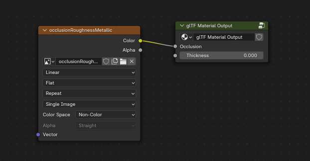
Một ambient occlusion map đã bake sẵn, được kết nối với một node không render nhưng sẽ được xuất sang glTF.¶
Mẹo
Nếu bạn bật Shader Editor Add-ons trong tùy chỉnh, bạn sẽ có thể thêm node group tùy chỉnh này từ menu: Add > Output > glTF Material Output
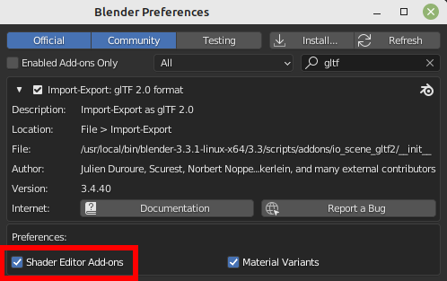
glTF lưu occlusion trong kênh đỏ (R), cho phép nó tùy ý dùng chung một ảnh với các kênh roughness và metallic.
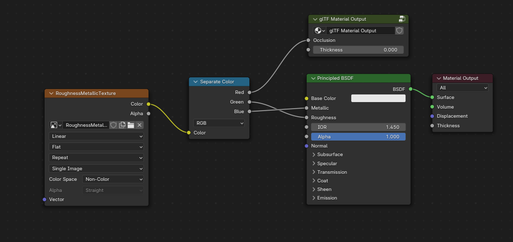
Kết hợp node này mô phỏng cách glTF đóng gói các giá trị occlusion, roughness và metallic vào một ảnh duy nhất.¶
Mẹo
Render engine Cycles có panel Bake có thể dùng để bake ambient occlusion map. Ảnh thu được có thể được lưu và kết nối trực tiếp vào node glTFMaterialOutput.
Để dùng normal map trong glTF, hãy kết nối output màu của node Image Texture với input màu của node Normal Map, sau đó kết nối output normal của Normal Map với input normal của node Principled BSDF. Node Image Texture dùng cho việc này nên có thuộc tính Color Space đặt thành Non-Color.
Node Normal Map phải giữ nguyên thuộc tính mặc định là Tangent Space vì đây là loại normal map duy nhất mà glTF hiện hỗ trợ. Cường độ của normal map có thể được điều chỉnh trên node này. Bộ export không xuất trực tiếp các node này, nhưng sẽ dùng chúng để định vị đúng ảnh và sao chép cài đặt cường độ vào glTF.
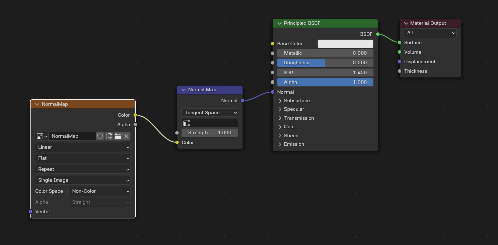
Một ảnh normal map được kết nối sao cho bộ export sẽ tìm thấy nó và sao chép vào file glTF.¶
Mẹo
Render engine Cycles có panel Bake có thể dùng để bake normal map tangent-space từ hầu hết mọi cách sắp xếp node vector normal khác. Chuyển Bake type sang Normal. Giữ nguyên các cài đặt space mặc định (space: Tangent, R: +X, G: +Y, B: +Z) khi dùng panel bake này cho glTF. Ảnh đã bake thu được có thể được lưu và cắm vào một material mới bằng node Normal Map như mô tả ở trên, giúp nó được xuất đúng cách.
Một node Image Texture có thể được kết nối với input Emission trên node Principled BSDF để kèm một emissive map vào material glTF. Ngoài ra, node Image Texture có thể được kết nối với một node shader Emission, và tùy ý kết hợp với các thuộc tính từ node Principled BSDF thông qua node Add Shader.
Nếu emissive map đứng một mình trong material, tốt nhất là đặt Base Color mặc định thành màu đen và Roughness mặc định thành 1.0. Điều này giảm thiểu ảnh hưởng của các kênh khác nếu chúng không cần thiết.
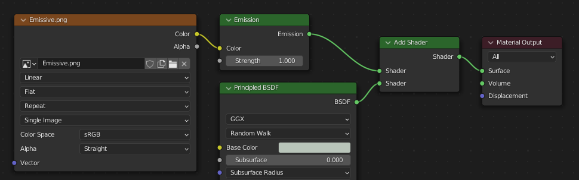
Cách sắp xếp này được hỗ trợ nhằm tương thích ngược. Sử dụng trực tiếp node Principled BSDF sẽ đơn giản hơn.¶
Nếu bất kỳ thành phần nào của emissiveFactor > 1.0, extension KHR_materials_emissive_strength sẽ được sử dụng.
Khi input Clearcoat trên node Principled BSDF có giá trị mặc định khác 0 hoặc có node Image Texture được kết nối, glTF extension KHR_materials_clearcoat sẽ được đưa vào bản xuất. Extension này cũng sẽ kèm theo một giá trị hoặc Image Texture từ input Clearcoat Roughness nếu có.
Nếu Image Texture được sử dụng, glTF yêu cầu các giá trị clearcoat được ghi vào kênh đỏ (R) và Clearcoat Roughness vào kênh xanh lá (G). Nếu các ảnh đơn sắc được kết nối, bộ export sẽ ánh xạ lại chúng vào các kênh màu này.
Input Clearcoat Normal chấp nhận cùng các loại input như input Normal cơ sở, cụ thể là một normal map tangent-space với +Y hướng lên và một cường độ do người dùng xác định. Input này có thể tái sử dụng cùng normal map mà material cơ sở đang dùng, hoặc được gán normal map riêng, hoặc để không kết nối để có lớp phủ mịn.
Tất cả node Image Texture dùng cho clearcoat shading nên có Color Space đặt thành Non-Color.
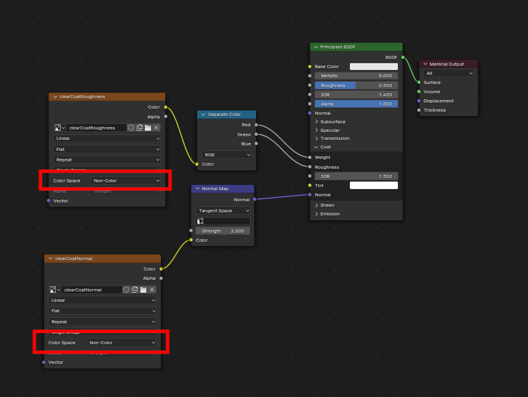
Ví dụ về một cách áp dụng clearcoat phức tạp vẫn xuất đúng sang glTF. Một lớp phủ mịn đơn giản hơn nhiều có thể được tạo chỉ từ riêng node Principled BSDF.¶
Khi input Specular IOR Level hoặc Specular Tint của node Principled BSDF có giá trị khác mặc định hoặc có node Image Texture được kết nối, glTF extension KHR_materials_specular sẽ được đưa vào bản xuất.
Texture và dữ liệu Anisotropic cần được chuyển đổi khi xuất và khi import.
Khi import, một số node được tạo để xử lý việc chuyển đổi này
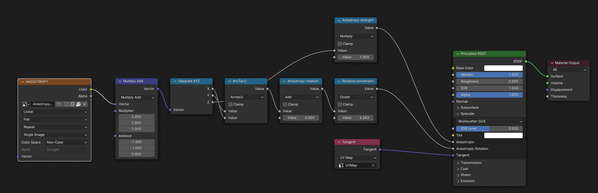
Khi xuất, chính các node này được nhận diện và dùng để xuất dữ liệu.
Khi xuất, bạn cũng có thể cắm một số texture thang xám vào socket Anisotropic và Anisotropic Rotation. Khi đó, bộ export sẽ chuyển các texture này thành texture tương thích với glTF.
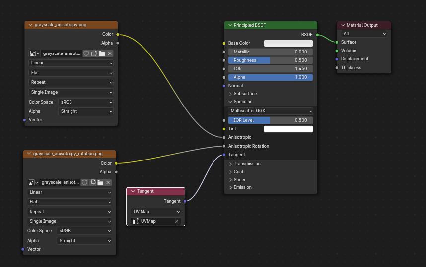
Lưu ý rằng socket tangent phải được liên kết với một node tangent kèm UVMap. UVMap được chọn phải là UVMap của Normal Map.
Khi input Transmission trên node Principled BSDF có giá trị mặc định khác 0 hoặc có node Image Texture được kết nối, glTF extension KHR_materials_transmission sẽ được đưa vào bản xuất. Khi texture được sử dụng, glTF lưu các giá trị trong kênh đỏ (R). Color Space nên được đặt thành Non-Color.
Transmission khác với alpha blending, vì transmission cho phép phản xạ specular với cường độ đầy đủ. Trong glTF, alpha blending dùng để biểu diễn các vật liệu vật lý bị thiếu một phần trong hình học được chỉ định, chẳng hạn như băng gạc y tế. Transmission dùng để biểu diễn các vật liệu vật lý đặc nhưng cho phép ánh sáng không phản xạ specular truyền qua vật liệu, như kính.
Mẹo
Roughness cơ bản của material có thể được dùng làm mờ transmission, giống như kính mờ.
Mẹo
Thông thường, chế độ alpha blend của material truyền sáng nên giữ nguyên "Opaque" — cài đặt mặc định — trừ khi material chỉ phủ một phần hình học được chỉ định.
Ghi chú
Trong các engine thời gian thực có hỗ trợ transmission, nhiều hạn chế kỹ thuật của engine có thể quyết định những phần nào của scene nhìn thấy được qua bề mặt truyền sáng. Cụ thể, material truyền sáng có thể không hiển thị được sau các material truyền sáng khác. Các hạn chế này ảnh hưởng đến transmission dựa trên vật lý, nhưng không ảnh hưởng đến material không truyền sáng dùng alpha blend.
Ghi chú
Nếu bạn muốn bật khúc xạ (refraction) trên mô hình, KHR_materials_transmission phải được dùng thêm cùng với KHR_materials_volume. Xem phần Volume chuyên biệt trong tài liệu.
Cảnh báo
Transmission phức tạp để các render engine thời gian thực triển khai, và việc hỗ trợ glTF extension KHR_materials_transmission vẫn chưa phổ biến.
Volume có thể được xuất bằng node Volume Absorption, kết nối với socket Volume của node Output. Dữ liệu sẽ được xuất bằng extension KHR_materials_volume.
Để volume được xuất, phải thiết lập một chút transmission trên node Principled BSDF.
Màu của node Volume Absorption được dùng làm màu suy giảm (attenuation color) của glTF. Không cho phép dùng texture cho thuộc tính này.
Density của node Volume Absorption được dùng làm nghịch đảo của khoảng cách suy giảm (attenuation distance) trong glTF.
Thickness có thể được cắm vào socket Thickness của node group tùy chỉnh glTFMaterialOutput.
Nếu texture được dùng cho thickness, nó phải được cắm vào kênh Xanh lá (G) của ảnh.
Dispersion chỉ có thể được xuất nếu material cũng sử dụng extension KHR_materials_volume. Dữ liệu sẽ được xuất bằng extension KHR_materials_dispersion. Socket dispersion của node group tùy chỉnh glTFMaterialOutput được dùng cho extension này.
Iridescence có thể được xuất bằng extension KHR_materials_iridescence. Dữ liệu sẽ được xuất bằng các node sau:
Iridescence Thickness Maximum có thể được cắm vào socket Thickness của node group tùy chỉnh glTFMaterialOutput. Nếu dùng texture, nó phải được cắm vào kênh Đỏ (R) của ảnh.
Iridescence IOR có thể được cắm vào socket Thin Film IOR của node Principled BSDF.
Iridescence Factor có thể được cắm vào socket thickness của node Principled BSDF.
Iridescence Maximum Thickness có thể được cắm vào socket Iridescence Thickness Maximum của node group tùy chỉnh glTFMaterialOutput
Texture cho Iridescence Factor có thể được cắm vào kênh Đỏ (R) của một ảnh cắm vào socket này. Bạn có thể dùng node Multiply để nhân texture này với giá trị Iridescence Factor.
Texture cho Iridescence Thickness có thể được cắm vào kênh Xanh lá (G) của một ảnh, được dùng làm hệ số trộn cho thickness giữa giá trị Minimum và Maximum.
Bạn có thể thêm một Variant mới bằng cách nhấp ở bên phải danh sách Variant. Sau đó bạn có thể đổi tên bằng cách nhấp đúp.
Sau khi thay đổi Material trong Material Slots, bạn có thể gán material hiện tại cho Variant đang hoạt động bằng Assign to Variant.
Bạn cũng có thể đặt material mặc định bằng Assign as Original. Các material này sẽ được xuất làm material mặc định trong glTF. Đây là những material sẽ được hiển thị bởi bất kỳ trình xem nào không hỗ trợ extension KHR_materials_variants.
Nếu bạn muốn kiểm tra từng primitive một xem những Variant nào được dùng, bạn có thể vào Mesh Material Properties.
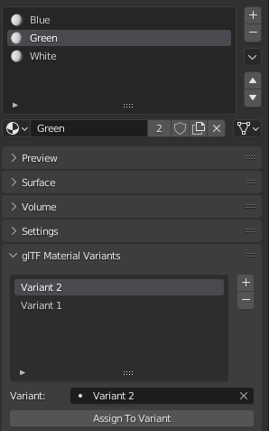
Tab glTF Material Variants liên quan đến material Slot đang hoạt động và Material mà slot này sử dụng. Bạn có thể thấy mọi Variants đang dùng material này cho Slot/Primitive đã cho.
Bạn cũng có thể gán material cho Variants từ tab này, nhưng khuyến nghị là thực hiện từ tab trong 3D View.
Đối với material mà chỉ mặt trước mới hiển thị, hãy bật Backface Culling (Camera) trong panel Settings của material EEVEE. Khi dùng engine khác (Cycles, Workbench), bạn có thể tạm thời chuyển sang EEVEE để cấu hình cài đặt này, rồi chuyển lại.
Để ô này không được chọn đối với material hai mặt.
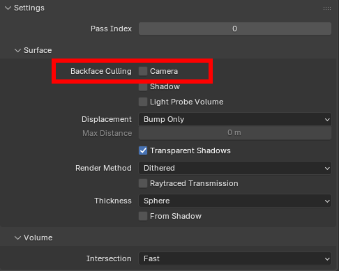
Trạng thái ngược của cài đặt này điều khiển cờ DoubleSided của glTF.¶
glTF có ba chế độ alpha, tùy thuộc vào việc giá trị alpha luôn bằng 1, luôn bằng 0 hoặc 1, hay có thể nằm giữa 0 và 1. Bộ export tự động xác định chế độ alpha từ các node được kết nối vào socket Alpha.
Opaque
Trong chế độ opaque, alpha của material luôn bằng 1.
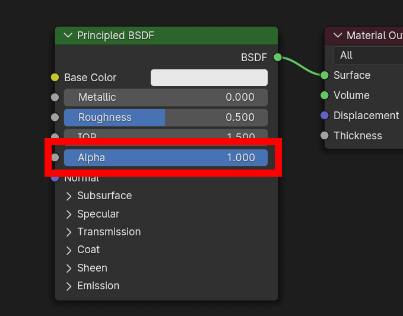
Mask
Trong chế độ mask, alpha của material luôn bằng 0 hoặc 1. Điều này tạo ra độ trong suốt kiểu "cắt bỏ" (cutout), với ranh giới cứng giữa vùng đục và vùng trong suốt, và có thể dùng cho những thứ như lá cây hoặc vải có lỗ. Để bật chế độ này, hãy dùng node Math để làm tròn giá trị alpha về 0 hoặc 1.
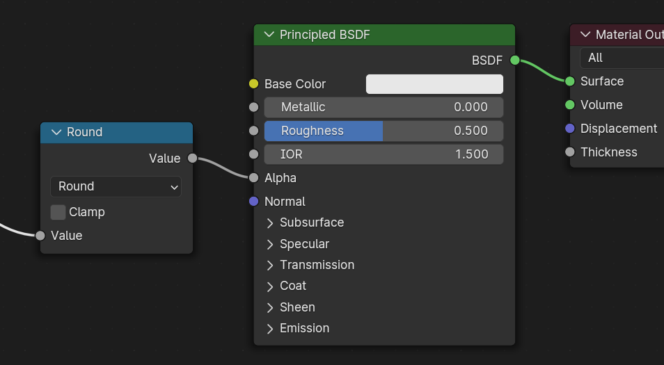
Làm tròn đưa các giá trị alpha từ 0.5 trở lên lên 1, và các giá trị dưới 0.5 xuống 0. Cũng có thể dùng một giá trị cắt (cutoff) khác 0.5 bằng cách dùng node Math để tính 1-(alpha<cutoff).
Chế độ mask về bản chất giống chế độ trộn "Alpha Clip" của EEVEE, nhưng được thực hiện bằng shader node nên hoạt động được trong các render engine khác.
Blend
Material không dùng hai chế độ trên sẽ dùng chế độ blend. Chế độ blend cho phép các bề mặt trong suốt một phần, làm nhuộm màu các object nhìn xuyên qua chúng, giống như các lớp phim màu. Tuy nhiên, độ trong suốt một phần rất phức tạp khi render, và các trình xem glTF có thể hiện lỗi hình ảnh trong những scene phức tạp dùng chế độ blend.
Để tránh lỗi hình ảnh, một ý tưởng tốt là tách riêng những phần của mô hình có thể dùng chế độ opaque hoặc mask, và chỉ dùng chế độ blend ở những phần cần thiết, hoặc chỉ dùng một lớp polygon trong suốt duy nhất đặt trước các object đục.
Việc điều khiển việc chọn UV map và các biến đổi có được bằng cách kết nối node UV Map và node Mapping vào bất kỳ node Image Texture nào.
Cài đặt từ node Mapping được xuất bằng glTF extension tên KHR_texture_transform. Ở phía trên có bộ chọn loại mapping. Point là loại được khuyến nghị khi xuất. Texture và Vector cũng được hỗ trợ. Các offset được hỗ trợ là:
Location - X và Y
Rotation - chỉ Z
Scale - X và Y
Với loại Texture, Scale X và Y phải bằng nhau (co giãn đồng đều).
Bất kỳ node Image Texture nào cũng có thể tùy chọn được nhân với một màu hoặc một giá trị vô hướng hằng số. Chúng sẽ được ghi thành các factor trong file glTF — đó là những số được nhân với các image texture tương ứng. Những thứ này không phổ biến.
Dùng node Math (multiply) cho factor vô hướng. Dùng giá trị thứ hai làm factor
Dùng node Mix (color / multiply) cho factor màu. Đặt Factor thành 1 và dùng Color2 (B) làm factor
Một material duy nhất có thể dùng tất cả những thứ trên cùng lúc nếu muốn. Hình này minh họa cấu trúc node điển hình khi một số tùy chọn trên được áp dụng cùng lúc:
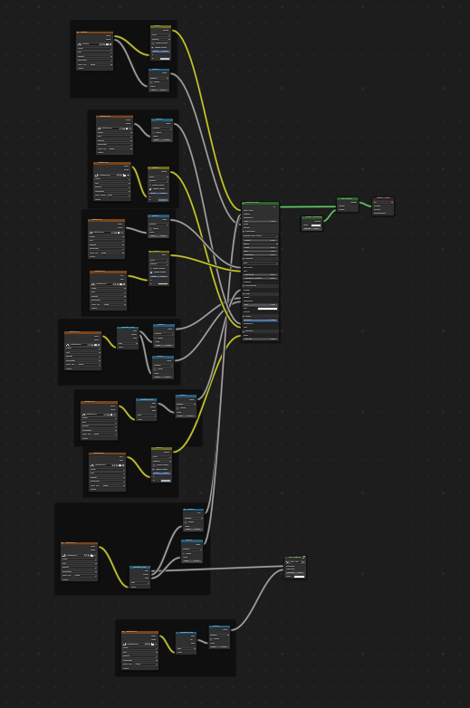
Một material Principled BSDF với emissive texture.¶
UDIM là cách lưu nhiều texture trong một file ảnh duy nhất. Hệ thống UDIM được Blender hỗ trợ nhưng glTF không hỗ trợ. Khi xuất một mô hình dùng UDIM, add-on sẽ tự động tách ảnh thành nhiều ảnh, mỗi ảnh cho một tile, và cập nhật các material node để dùng các ảnh mới. Mọi UDIM texture phải dùng cùng một UV map thì mới được xuất.
Định dạng glTF hỗ trợ ba loại punctual light: point, spot và directional (Sun trong Blender). Loại đèn Area và ánh sáng World của Blender không được glTF hỗ trợ và sẽ bị bỏ qua khi xuất.
Để bật xuất đèn, hãy chắc chắn đánh dấu tùy chọn Include Punctual Lights trong bộ export. Việc này sẽ dùng glTF extension KHR_lights_punctual.
Màu của đèn glTF được xác định bởi tích của: - Ô màu trên object đèn, và - Output màu của node shader Emission, nếu đèn đang dùng node và có shader Emission kết nối vào output của nó.
Nếu bạn dùng render engine EEVEE, chỉ ô màu trên object đèn được sử dụng, còn node shader Emission bị bỏ qua. (Điều này phản ánh cách render trong Viewport)
Với đèn Sun, cường độ được xác định bởi ô strength trên object đèn. Với đèn Point và Spot, cường độ còn có thể được xác định bởi socket Strength của node Light Falloff.
Nếu bạn dùng render engine EEVEE, cách dựng node sẽ bị bỏ qua và chỉ ô strength trên object đèn được sử dụng.
Định dạng glTF 2.0 cốt lõi có thể được mở rộng với thông tin bổ sung bằng các glTF extension. Điều này cho phép định dạng file chứa những chi tiết chưa được xem là phổ quát tại thời điểm công bố lần đầu. Không phải trình đọc glTF nào cũng hỗ trợ mọi extension, nhưng một số extension khá phổ biến.
Một số tính năng của Blender chỉ có thể xuất sang glTF qua các extension này. Các glTF 2.0 extension sau được add-on hỗ trợ trực tiếp:
Các nhà phát triển Python có thể thêm hỗ trợ Blender cho các glTF extension bổ sung bằng cách viết add-on bên thứ ba riêng của mình, mà không cần sửa đổi add-on glTF này. Để biết thêm thông tin, xem ví dụ trên GitHub và nếu cần, đăng ký một tiền tố extension.
Custom property luôn được import, và sẽ được xuất từ hầu hết các object nếu tùy chọn Include ‣ Custom Properties được chọn trước khi xuất. Chúng được lưu trong trường extras trên object tương ứng trong file glTF.
Khác với glTF extension, custom property (extras) không có namespace được định nghĩa sẵn và có thể được dùng cho bất kỳ mục đích riêng của người dùng hay ứng dụng nào.
Một animation glTF thay đổi transform của object hoặc pose bone, hoặc giá trị của shape key. Một animation có thể ảnh hưởng đến nhiều object, và một file glTF có thể chứa nhiều animation.
Các mô hình sau khi import được thiết lập để animation đầu tiên trong file tự động phát. Kéo Timeline để xem nó chạy.
Khi file chứa nhiều animation, phần còn lại sẽ được tổ chức bằng trình biên tập Nonlinear Animation. Mỗi animation trở thành một action được stash vào một NLA track. Tên track chính là tên của animation glTF. Để hiển thị animation trong track đó, hãy nhấp Solo (biểu tượng hình sao) bên cạnh track bạn muốn phát.
Nếu một animation ảnh hưởng đến nhiều object, nó sẽ bị tách thành nhiều phần. Phần animation tác động đến một object sẽ trở thành một action được stash trên object đó. Dùng tên track để biết action nào thuộc cùng một animation. Để phát toàn bộ animation, bạn cần bật Solo (biểu tượng hình sao) cho tất cả track của nó.
Mỗi animation sẽ được import thành một action duy nhất, với nhiều slot nếu animation ảnh hưởng đến nhiều object. Một slot sẽ được tạo cho TRS, một slot cho shape key, v.v...
Bạn có thể tìm thêm thông tin về action slot trong Animation.
Ghi chú
Hiện không có cách nào xem pose không có animation của một mô hình từng có animation.
Bạn phải bật UI trong tùy chỉnh của Add-on để thấy bộ chuyển animation
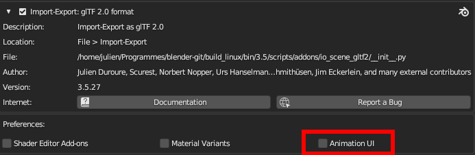
Bạn có thể chuyển sang bất kỳ animation nào đã import. Tính năng này tự động bật Solo (biểu tượng hình sao) cho mọi track cần thiết. Nó cũng đặt lại các object không có animation về transform Rest.
Một action sẽ được xuất nếu nó là action đang hoạt động trên một object, hoặc nó được stash vào một NLA track (ví dụ bằng các nút Stash hoặc Push Down trong Action Editor). Các action không được liên kết với một object theo một trong hai cách trên thì không được xuất. Nếu bạn có nhiều action muốn xuất, hãy chắc chắn rằng chúng đã được stash!
Một animation glTF có thể có tên, mặc định là tên action. Bạn có thể ghi đè bằng cách đổi tên NLA track từ NLATrack/[ActionStash] thành tên bạn muốn dùng. Ví dụ, hình mô hình con cáo sẽ được xuất với ba animation: "Survey", "Walk" và "Run". Nếu bạn đổi tên hai track trên hai object khác nhau thành cùng một tên, chúng sẽ thành một phần của cùng một animation glTF và sẽ phát cùng nhau.
Bộ import tổ chức các action sao cho chúng được xuất đúng cách với chế độ này.
Chế độ này hữu ích khi bạn xuất cho game engine cùng với thư viện animation của một nhân vật. Mỗi action phải nằm trên NLA track riêng của nó.
Trước Blender 4.4, các track được gộp theo tên của chúng. Với Blender 4.4 và sự ra đời của slotted action, hành vi mặc định này đã thay đổi. Giờ đây, các track được gộp theo action mà chúng đang dùng, chứ không theo tên. Bạn có thể tìm thêm thông tin về action slot trong Animation.
Trong chế độ này, mỗi NLA Track sẽ được xuất thành một animation glTF độc lập. Chế độ này hữu ích nếu bạn đang dùng Strip modifier, hoặc nếu bạn có nhiều action trên cùng một Track.
Nếu bạn đổi tên hai track trên hai object khác nhau thành cùng một tên, chúng sẽ thành một phần của cùng một animation glTF và sẽ phát cùng nhau.
Dùng tùy chọn Scene, animation sẽ được xuất đúng như bạn thấy trong viewport. Bạn có thể chọn xuất một animation glTF duy nhất, hoặc từng object riêng biệt.
Ghi chú
Nhớ rằng chỉ một số loại animation nhất định được hỗ trợ:
Transform của object (location, rotation, scale)
Pose bone
Giá trị shape key
Animation của các thuộc tính khác, như physics, đèn hoặc material, sẽ bị bỏ qua.
Ghi chú
Để lấy mẫu (sample) animation shape key được điều khiển bởi driver dùng biến đổi bone, chúng phải nằm trên một mesh object là con trực tiếp của armature chứa các bone đó.
Đặc tả glTF xác định nhiều cách khác nhau để lưu dữ liệu. Bộ import xử lý được tất cả các cách này. Bộ export sẽ yêu cầu người dùng chọn một trong các dạng sau:
Cách này tạo ra một file .gltf dạng văn bản JSON mô tả cấu trúc tổng thể, cùng một file .bin chứa mesh và dữ liệu vector, và tùy chọn một số file .png hoặc .jpg chứa image texture được tham chiếu bởi file .gltf.
Mẹo
Việc có một bộ các file riêng biệt giúp người dùng dễ dàng quay lại chỉnh sửa bất kỳ JSON hoặc ảnh nào sau khi xuất xong.
Ghi chú
Lưu ý rằng việc chia sẻ định dạng này đòi hỏi phải chia sẻ tất cả các file riêng biệt này cùng nhau như một nhóm.
Cách này tạo ra một file .gltf dạng văn bản JSON, với toàn bộ mesh data và image data được mã hóa (dùng Base64) bên trong file. Dạng này hữu ích khi tài sản phải được chia sẻ qua kết nối chỉ hỗ trợ văn bản thuần.
Cảnh báo
Đây là dạng kém hiệu quả nhất trong các dạng có sẵn và chỉ nên dùng khi bắt buộc. Chỉ khả dụng khi bạn đã kích hoạt nó trong tùy chỉnh của add-on.
Định dạng glTF yêu cầu normals không liên tục, UV và các thuộc tính vertex khác phải được lưu thành các vertex riêng biệt, đúng như yêu cầu khi render trên phần cứng đồ họa thông thường. Tùy chọn này cố gắng gộp các vertex cùng vị trí khi có thể. Hiện tại không thể gộp các vertex có normals khác nhau.
Shading
Cách normals được tính khi import.
Lighting Mode
Tương thích ngược tùy chọn cho các render engine không chuẩn. Áp dụng cho đèn. Standard: đơn vị chiếu sáng glTF dựa trên vật lý (cd, lx, nt). Unitless: chiếu sáng phi vật lý, không đơn vị. Hữu ích khi không có điều khiển exposure. Raw (Đã lỗi thời): cường độ chiếu sáng của Blender không chuyển đổi
Thay đổi thuật toán heuristic mà bộ import dùng để quyết định vị trí đặt đỉnh bone. Lưu ý rằng thiết lập Fortune có thể gây sai lệch trong các mô hình dùng co giãn không đồng đều. Ngoài ra, thiết lập này thuần túy về thẩm mỹ. Giá trị mặc định sẽ không đổi trục và tốt nhất khi xuất lại từ Blender. Tùy chọn mặc định này sẽ thay đổi chế độ hiển thị (thêm shape và đổi đường quan hệ) để có góc nhìn đẹp hơn, ngay cả khi trục bone gốc không chính xác nhất (về mặt thẩm mỹ)
Guess Original Bind Pose
Xác định pose cho bone (và do đó là skinned mesh) trong Edit Mode. Khi bật, sẽ cố đoán pose đã dùng để tính các ma trận bind ngược.
Import scene glTF thành collection. Đây là mặc định. Với việc import một scene duy nhất, mọi object được tạo trong collection đang hoạt động. Với việc import nhiều scene, mỗi scene được import thành một collection. Các scene không phải mặc định bị loại khỏi View Layer. Nếu có node mồ côi (không thuộc scene nào), một Orphan Collection sẽ được tạo (cũng bị loại khỏi View Layer). Khi tắt, scene glTF được import vào scene đang hoạt động của Blender. Các scene glTF khác được import thành Scene Blender mới.
Select Imported Objects
Chọn các object đã tạo sau khi import.
Import Scene Extras
Import extras glTF thành custom property, ở cấp scene.
Chỉ dành cho định dạng file glTF Separate. Giữ nguyên file texture gốc nếu có thể. Cảnh báo: nếu bạn dùng nhiều hơn một texture ở nơi chuẩn PBR chỉ yêu cầu một, thì chỉ một texture được sử dụng. Điều này có thể dẫn đến kết quả ngoài ý muốn
Textures
Chỉ dành cho định dạng file glTF Separate. Thư mục để đặt các file texture vào. Tương đối so với file gltf.
Copyright
Quyền và điều kiện pháp lý cho mô hình.
Remember Export Settings
Lưu các cài đặt xuất vào file .blend để chúng được gọi lại vào lần sau khi file được mở.
Xuất các instance của Geometry Nodes. Tính năng này mang tính thử nghiệm.
GPU Instances
Xuất bằng extension EXT_mesh_gpu_instancing.
Flatten Object Hierarchy
Hữu ích trong trường hợp ma trận TRS không thể phân rã. Chỉ skinned mesh mới giữ là con của armature.
Full Collection Hierarchy
Xuất collection thành empty, giữ nguyên toàn bộ hệ thống cấp bậc. Nếu một object nằm trong nhiều collection, nó chỉ được xuất một lần, ở collection đầu tiên nó được tìm thấy.
Xuất vertex color khi được dùng trong material node tree làm hệ số nhân Base Color. Đây là mặc định và chính xác nhất theo đặc tả glTF.
Active:
Xuất vertex color đang hoạt động, kể cả khi không được dùng trong material node tree. Một trình xem glTF hoàn toàn tuân thủ đặc tả sẽ hiển thị VC này như hệ số nhân Base Color.
Name:
Xuất vertex color với tên đã cho. Một trình xem glTF hoàn toàn tuân thủ đặc tả sẽ hiển thị VC này như hệ số nhân Base Color.
None:
Không xuất vertex color.
Export all vertex colors
Xuất tất cả vertex color, các VC bổ sung sẽ là COLOR_1, COLOR_2, v.v.
Export active vertex color when no material
Xuất vertex color đang hoạt động khi không có material nào được gán cho object.
Xuất material đầy đủ, bao gồm mọi texture và shader từ node tree.
Placeholder:
Chỉ xuất material placeholder, không kèm texture hay shader. Các primitive không bị gộp, nên thông tin material slot được giữ lại.
Viewport:
Chỉ xuất material của viewport (Base Color, Roughness và Metalness).
No Export:
Không xuất material. Các primitive bị gộp, làm mất thông tin material slot.
Images
Định dạng đầu ra cho ảnh. PNG là không hao chất lượng (lossless) và thường được ưa chuộng, nhưng JPEG có thể thích hợp hơn cho các ứng dụng web nhờ kích thước file nhỏ hơn. Nếu chọn WebP, mọi texture sẽ được lưu thành WebP, không có bản thay thế png/jpg. Nếu chọn None, material được xuất không kèm texture.
Image Quality
Chất lượng của file xuất, khi xuất file jpeg hoặc WebP.
Create WebP
Tạo texture WebP cho mọi texture, bên cạnh texture hiện có. Với texture đã là WebP, không có gì xảy ra.
WebP fallback
Với mọi texture WebP, tạo một texture thay thế dạng png.
Unused images
Xuất những ảnh không được dùng trong bất kỳ material nào.
Unused textures
Xuất thông tin texture (sampler, image, texcoord) không được dùng trong bất kỳ material nào.
Tương thích ngược tùy chọn cho các render engine không chuẩn. Áp dụng cho đèn. Standard: đơn vị chiếu sáng glTF dựa trên vật lý (cd, lx, nt). Unitless: chiếu sáng phi vật lý, không đơn vị. Hữu ích khi không có điều khiển exposure. Raw (Đã lỗi thời): cường độ chiếu sáng của Blender không chuyển đổi
Hữu ích khi một số object bị ràng buộc bởi constraint nhưng bản thân chúng không được tạo animation.
Merge Animation
Chế độ gộp animation. Có thể theo Action (dùng slot), theo tên NLA Track, hoặc không gộp. Khi gộp theo tên NLA Track, mọi animation có cùng tên NLA Track sẽ được gộp. Khi gộp theo Action, mọi animation dùng cùng một action sẽ được gộp. Khi không gộp, tất cả animation sẽ được xuất thành các animation riêng biệt.
Tùy chọn này cho phép xuất một số animation thuộc tính của material, đèn và camera hợp lệ trong glTF.
Animation Pointer (Experimental)
Xuất một số animation thuộc tính của material, đèn và camera hợp lệ trong glTF. Đây là tính năng thử nghiệm và chưa phải mọi thuộc tính đều được hỗ trợ.